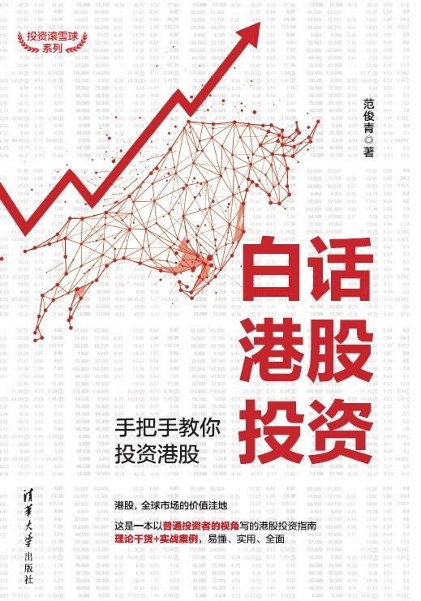

|  |
白话港股投资：手把手教你投资港股 |
范俊青 “70后”投资者，雪球网活跃用户，文章总阅读量超过1800万人次。有20年股票投资经历，2013年开始投资港股，经历过港股的起起伏伏，并在2016年后将大部分可投资金用于港股投资。
推荐序
港股超级低估值，大概每一个主动投身于香港的内地投资者，都是冲着香港的股市便宜去的。与此同时，每一个仅仅因为便宜买入港股的投资者，也都有自己的血泪史。我也不例外，买过很多知名的烟蒂股，但最后结果都不太好。读完本书，我想总结几个观察低估值股票的角度。
1. 看股息
股息是贯穿全书的一个核心关键词，全书几百次重复股息，可见其重要。大家知道，低估是市场对于企业的负面看法，未必代表企业的真实情况。但是，企业真实的经营情况、良好的效益，如何能够传导到市场上来，扎扎实实地影响到投资者对企业的看法，并且实质性地打击空头，最佳方式就是股息（包括回购）。通过盈利的合理分配、企业的经营绩效，企业的真实情况就和股价建立了一个对应关系，否则可能企业是企业，股价是股价，两者完全脱钩。在港股那么多年，经历了大大小小的股灾。面对资产的巨大损失，最能给我以安慰的，就是股息。大不了拿股息，这句话看似无奈，背后其实有着巨大的支持力量。
2. 看成长
港股一直流传着种种黑料，本地老千、外资做空、被深圳超越等，好像港股市场不行了。但真要说拿得出手的明星成长股，港股是超越A股的。比如说十多年来一直在增长的腾讯，在香港上市16年，涨了上千倍，目前市值是4万多亿港元。再比如说恒大和碧桂园，它们在2010年的地产销售额还都只是万科的零头，但是截至2018年，两家双双超越万科，成为中国地产的新龙头。这两年涌现出了更多的大牛股，比如美团点评、李宁、春立医疗、金蝶国际，港股通的资金正在逐渐改变港股的生态系统，投资者并不太在意公司短期是否盈利、盈利多少，看中的是公司核心竞争力和长期的增长逻辑。
腾讯几乎从未被低估，而碧桂园和恒大都曾经在两百亿的市值里挣扎过，如果一个股票，纸面上的低估，我们说的是低市盈率、低市净率、高股息率。这种情况下，对企业的极度低估，说明市场对企业的未来严重不看好，认为当前的盈利水平不可持续，或者认为企业可能突然因为债务破产。持续不断的增长财报就是对这种悲观预期最强悍有力的回击。
3. 看人气
我们在香港股市越久，就越会发现，冷门股票的“幺蛾子”特别多。港股很多冷门股极度低估，因此大股东没有动力维护市值，甚至干脆让市值下跌，然后逐步把优质资产转移出上市公司体系，更狠的，就直接私有化退市。所谓“出老千”只是投资者的气话，就法律而言，很多所谓“出老千”的行为其实并不违规。只是作为小股东，你没有能力和时间去跟大股东博弈。所以我说，港股还是要看人气。资本市场是一把双刃剑，估值给得太高，就形成了泡沫，你的投资就有风险；如果估值长期给得太低，大股东也懒得做市值，私有化对这类公司的大股东来说是利益最大化的。近几年来，港股私有化的公司数量逐年增加，这同时也反映了港股市场极度低估的现状，对企业股价底部买入后博中私有化的投资者来说是一个巨大的奖赏，但对长期持股的投资者来说是一个巨大的伤害。对于这类公司来说，进攻防守的底线还是股息率或超低市净率，因为每家被私有化的公司都能瞬间取得50%~120%的收益，这两年博私有化取得不错收益的港股投资者也大有人在。
4. 看趋势
港股的低估是显而易见的，港股通的参与正在逐渐改变港股的生态，内地的机构投资者和个人投资者会建立与公司更多、更紧密的互动关系，驱动这些公司的价值走向合理的估值。举例来说，越来越多买中国建材、微创医疗的投资者，在公司盈利持续增长的基本面下，会去参加公司的业绩会、股东会；公司也在顺应市场的要求，借助各种渠道与市场沟通。大家应该可以欣喜地发现，今年中国建材、微创医疗的路演、机构调研报告比过往10年都多。而且不只是中国建材、微创医疗这两家公司，港股里被低估的优秀公司都有这个趋势。再比如，你可能会觉得，中国建材股息率较上一个年度增长了近一倍，这是你等待的结果，是水到渠成的事情。但事实上，这也有可能是一些机构投资者和个人股东不断地跟管理层当面提议的结果。所以可以相信，港股对比A股低估的这部分无风险超额收益会是以后确定的投资收益。
如果是一个没人气的类似低估的股票，你等待的结果可能是私有化、低价配股、低价派发期权。到最后你会发现，有人气、有成长、有股息的股票其实很难在纸面上被过度低估。即便出现纸面低估，时间也不会太长，要善于把握。这就是所谓的投资并不容易，需要平时大量的积累，还需要机会出现时的敏锐果断。
自序
我投资股票已经有20年了，投资港股也有7年的时间。从刚开始不经意地投资到后来开始专注研究股票投资，经历过2007年鸡犬升天的股市狂潮以及浪潮退后狂跌70%的大崩盘，也经历过2014年年末到2015年年初的大涨以及2015年的股灾。经历过股市的暴风骤雨，更知道股市投资需要有明灯指引。普通投资者如果考虑自己投资，必须建立适合自己的一套体系。
港股市场在内地普通投资者的眼中是一个没有涨跌停、老千股横行、虽然估值低却陷阱更多、只可远观而不敢进入的市场，但是真实的港股是这样的吗？当然不是。我对港股的态度是：“再不投资港股，你还是价值投资者吗？”我本人也是身体力行，目前自有资金的80%以上都是投资在港股中。其实港股市场是价值投资者的天堂，港股的低估值给投资者提供了较高的安全边际，使得港股投资相对A股投资更为安全并能收获更好的收益。
之所以建议投资港股，是因为港股又好又便宜。在A股，除了地产、银行、保险以及其他少数优质股票外很难找到又好又便宜的股票，更别说那些估值高得离谱的中小板和创业板股票，在那里寻找好的股票相对于港股难度大了很多（当然不是说没有好的成长企业，而是它们太贵了）。这几年以融创中国、中国恒大、碧桂园为代表的在香港上市的内地房地产股票的涨幅也远远超过A股房地产股票，其中最主要的原因就是低估和成长，优质制造业股票在港股更是被低估得多。在A股中估值相对低的优秀制造业企业，除了少数企业如万华化学、海螺水泥、格力电器、美的集团等，已经难觅踪影。但是，如果投资港股，你会重新打开一片天地，发现被低估的优秀制造业企业比比皆是，比如中国建材、东岳集团、天能动力、兴发铝业等，在A股和港股都已上市的公司，绝大多数港股也相对A股便宜得多。比如以2020年1月30日收盘价格来计算，长城汽车A股就比港股价格高出75%左右。当然港股的金矿边上也同样遍布陷阱，如何挖到金矿又不掉入陷阱则是我们需要修炼的基本功。本书第九章专门讲解港股的老千股和投资陷阱，了解这些可以说是投资港股的必修课。
港股的股息率也是比较高的，2019年12月，恒生指数成份股股息率为3.52%，当然由于港股通收取20%的红利税，对于通过港股通购买的人来说收益要打个折扣。即便如此，股息率也超过了银行定期存款利率，同时也明显高于A股。事实上耐心挑选，在港股市场股息率超过10%的股票都不在少数，连续多年分红比率超过5%的股票也比比皆是。
2019年12月末，内地企业已经占据港股上市公司数量的51%、市值的73%、成交量的79%，目前这个比例还在进一步上升。也就是说，内地投资者投资港股其实比国外和香港投资者有更多的优势，由于目前主要活跃股票以内地企业为主，这些内地企业的业务大部分也是在内地，因此内地投资者在理解企业商业模式、市场感知、企业调研方面都具备优势。
第一章 又好又便宜的港股
第一节 中国股市中估值最低的港股
先给大家看看港股中的*内房股（内房股是指在香港上市，但是主要业务在内地的房地产公司）*里的“三剑客”（这里的价格是采用2019年7月21日的前复权价格）：
- 融创中国：2016年全年股价徘徊在4~6港元，最低价3.84港元，最高价6.45港元，2017年10月触及当年最高价41.57港元，截至2019年7月21日，股价为38.85港元。
- 中国恒大：2016年全年股价徘徊在4.5~5.5港元，最低价4.16港元，最高价5.70港元，2017年10月触及最高价30.75港元，截至2019年7月21日，股价为22.10港元。
- 碧桂园：2016年全年股价徘徊在2.6~4港元，最低价2.51港元，最高价4.12港元，2017年10月触及当年最高价17.86港元，截至2019年7月21日，股价为11.36港元。
除了内房“三剑客”，中国奥园、时代中国控股、新城发展、龙湖集团、宝龙地产等众多内房股都有不错的涨幅，其中有几只都是涨幅超过10倍的股票。这些股票涨幅和A股的“妖股”不同，是一个价值发现并认可的过程，即使到现在，仍然有不少内房股具备很高的投资价值。
有人会说，房地产股票杠杆高，负债多，那么除了内房股，优质制造业也在港股屡创佳绩：长城汽车H股曾经从2008年10月的最低价到2015年4月涨幅接近100倍，吉利汽车也曾经在短短的2016年2月到2017年11月不到2年时间获得10倍的涨幅。申洲国际、安踏体育等也都有几十上百倍的涨幅，还有早期的康师傅、旺旺、达利园、维他奶国际这些消费股也曾经有过几十倍的涨幅。
一、AH股比价情况
截至2020年2月7日，同时在A股和港股上市的股票共计119只，AH溢价率排名中位数第60位的兖州煤业A股要比港股贵出60.75%，溢价率最高的洛阳玻璃A股股价甚至是港股价格的5.97倍，只有一只股票中国平安港股是高于A股的，也只高出1.5%，其余118只港股均低于A股。要知道，这里的AH股是完全具有相同企业权益的股票，每股分红都是一样的，股东权利也是一样的。当然，A股的股票有打新的优势，加上流动性比较好，溢价率在10%~15%是合理的，当差价过大时，作为真正的价值投资者，这其实很容易选择。通俗地说，大家买东西的时候都知道一样的东西，不管它是在线上还是在线下卖，我们都应该选便宜的买。选择股票也是同样的道理，应该挑选价格低得多的H股来购买。
二、港股和A股估值比较
（一）估值比较
先简单介绍一下市盈率、市净率、股息率和净资产收益率的概念。
- 市盈率
市盈率（Price Earnings Ratio，P/E Ratio）也称“PE”，是指一定的考察期（通常为12个月）内，上市公司股票的价格与每股收益的比率，是股价除以每股收益得出的数据，也可以用公司市值除以归母净利润得出。市盈率的计算公式如下：
市盈率 = 每股价格 / 每股收益 * 100%
一般认为，如果一家上市公司股票的市盈率过高，那么该股票的价格可能被高估。根据考察期的不同，市盈率分为静态市盈率、滚动市盈率、动态市盈率三种。
- 用上一年度公司的归母净利润数据计算得到的市盈率为静态市盈率。静态市盈率的缺点在于使用的是上一年度的数据，无法反映公司未来的预期。
- 用最近的4个季度的公司归母净利润数据计算得到的市盈率则是滚动市盈率，通常用TTM表示。
- 动态市盈率则是用下一年度或者是年初推算的当年的预测归母净利润计算的市盈率。除了可以计算当年度的动态市盈率，还可以计算未来几年的动态市盈率，但由于是预估值，可能会有较大的偏差。
一般说的市盈率通常是指静态市盈率，滚动市盈率更贴近现在。而动态市盈率则含有预测成分，是对未来的一种判断。市盈率是重要指标，但只是在一定程度上提供参考，不能单独作为投资依据。在实际投资中，投资者要结合股票的成长率全面考虑，只有市盈率不高成长性也好的股票才是好的投资标的。
- 市净率
市净率（Price-to-Book Ratio，P/B）也称“PB”，又名市账率，是指每股市价与每股净资产的比值，也可以用市值除以公司净资产得出。市净率的计算公式如下：
市净率 = 每股价格 / 每股净资产 * 100%
市净率是比较常用的衡量股票估值高低的指标，但是和市盈率一样，都不适宜单独用来作为投资依据。一般来说，市净率较低的股票投资价值较高；市净率较高的股票则投资价值低。市净率一定要结合公司的其他指标以及经营情况、盈利能力等综合判断。
市净率的优点在于净资产比净利润相对稳定，对公司净资产的衡量有较高的参考价值。但是市净率低的公司往往可能净资产收益率不高，如果预期未来的净资产收益率也同样不高，那么该公司的股票也不值得购买。
资产重估或虚增资产会导致市净率低，所以分析市净率一定要分析净资产的组成。
- 股息率
股息率（Dividend Yield Ratio）是指一年中每股的派息额和每股股价的比率。也可以用公司一年的总派息金额与当时市值的比值计算。股息率的计算公式如下：
股息率 = 每股派息 / 每股价格 * 100%
在投资实践中，股息率是衡量企业是否具有投资价值的重要标尺之一。股息率是挑选收益型股票的重要参考标准，如果连续多年年度股息率超过1年期银行存款利率，则这只股票基本可以视为收益型股票，股息率越高越吸引人。
- 净资产收益率
净资产收益率（Rate of Return on Commom Stockholders' Equity，ROE），也称为股东权益报酬率、权益报酬率、权益利润率、净资产利润率，是衡量上市公司盈利能力的重要指标。净资产收益率是净利润与净资产（所有者权益）比值的百分比，净资产收益率的计算公式如下：
净资产收益率 = 净利润 / 净资产（所有者权益） * 100%
净资产收益率是很重要的指标，但是要连续来看，一般来说要看最近5年的数据，更重要的是以此为依据推断未来的ROE，这个数据反映的是企业的盈利能力，据此并结合对未来的分析，判断出未来的盈利能力。
上述四个指标用于个股时都必须和其他指标相结合来参考，不宜单独作为决策依据。市盈率、市净率和股息率用于整体市场的纵向比较时具备很好的参考价值，比如拿港股市场来说，当市盈率、市净率处于历史低位区间的时候或者当股息率处于历史高位区间的时候具备较好的投资价值；用于不同市场之间比较时也具备较高的参考价值，比如港股和A股或者美股做比较。
（二）港股和A股估值比较
从图1-1可以看出，截至2019年7月19日，港股主板的平均市盈率为11.35倍，相比上交所13.61倍和深交所的23.54倍都要明显低得多。而如果看香港大盘股，市盈率更是低至8.86倍，市净率仅为1.08倍，香港国企指数市盈率8.96倍，市净率仅为1.04倍。而且由于腾讯控股无论在港交所主板还是大盘都占比接近10%，2019年7月19日市盈率高达38.43倍，所以腾讯控股这一只股其实就大约推高了港股主板或大盘市盈率的7%~8%。扣除腾讯控股的影响，港股主板PE大约不到10.5倍，港股大盘股PE大约仅为8.2倍。
从市盈率来说，2019年的港股也是处于相对历史低位，2019年12月恒生指数的市盈率为11.25倍。从1980年到2019年这40年，港股恒生指数历史平均市盈率每年年末为14.38倍，2000年到2019年年末这20年平均市盈率为14.08倍。恒生指数历史上最低市盈率为5.5倍，最高约44倍，历史平均值约为14.3倍，如图1-2所示。可以看出2019年12月的市盈率在历史水平中处于相对低位。
也就是说，港股2019年年末估值水平处于相对低位，从长期来看，估值修复加上企业自身发展导致股价向上的概率很大。
随着内地的进一步开放，港股通（包括沪港通和深港通）南下资金不断流入，内地居民利用各种渠道直接在港股开户投资，港股的流动性不仅会提升，内资最终会在内地主要企业中从外资手上抢到定价权，并逐步修复被低估得厉害的港股估值，可能将来内地居民投资港股几乎没有什么门槛。
这里再多说一句，历史上看，港股并非一直是被低估的。2014年，AH溢价指数还一度跌破90，也就是H股平均股价高于A股，最高时万科H股高出A股50%，中国平安H股高出A股近30%，2010—2014年AH溢价指数就在105上下波动，要知道当时还没有沪港通这种机制。而到2019年年末，AH溢价指数130则处于历史高位。历史或许已经告诉我们答案，港股的低估终究会结束，AH高差价也必然回归到相对合理的位置，只是目前还不知道回归要多长时间，但这里有着确定并且巨大的空间，这也是我的投资以港股为主的重要原因。
第二节 中国股市中股息率最高的港股
从表1-2和表1-3可以看出，港股股息率明显高出A股一大截。根据港交所和上交所、深交所的数据统计，总体平均港股股息率也明显高出A股股息率。
刚才讲到考虑到公司业绩的增长，这个数据从长期来看更是远远高于银行长期存款利息。这句话怎么理解呢？就是随着企业的发展，企业每年的利润还会增长，打个比方，企业今年每股的收益为1元，分红率为35%，那么每股分红为0.35元，假如企业明年的收益增长到1.2元，分红率还是35%，那么每股分红就会涨到0.42元。
我们投资股票，最重要的就是能够享受到企业增长的利益，这才是我们真正成为企业股东的重要意义。
知识链接：股息累计指数系列
投资者从持有的股票中可获得两类回报，分别为因股价上升而带来的资本升值及股息收益。投资者所关注的股市指标，如恒生指数及其他主要市场的重要指数一般皆为股票价格指数（又称为“资本市值指数”）。股票价格指数只计算其成份股的股价表现。股息的派发并不包含在指数的计算中。
相对而言，股息累计指数则会将股价变动及股息收益两个因素包含在内。当成份股公司派发现金股息于股东时，此数额将被加进指数计算中，而计算过程也假设了现金股息将会根据其各成份股的市值比重再投资于指数组合当中。在某些市场，股息累计指数又被称为总回报指数。
股息累计指数被基金经理、精算师及财务顾问等广泛用于量度不同的股票基金表现，尤其是退休基金，原因是股票价格指数未能反映该类基金的股息收益。
我们投资港股的时候都会参考恒生指数，但是恒生指数实际上不包含股息的收益，这和我们真实投资收益情况不太一样，如果从长期来看更是大相径庭。而实际上股息累计指数就比较科学，股息累计指数还把股息收入考虑进去，并且考虑了分红再投资。就像看个股的K线图一样，如果股价不复权实际上没有参考价值，对于长期投资资金来说，采用等比再投的精准复权方式才更为准确，也就是说分红按照当时股价再投资的方式。我们从恒生指数有限公司网站里截取图1-5，从中可以很清晰地看到股息累计指数和恒生指数的差异。
第三节 认识港股市场
一、香港市场概况
1969—1972年，香港设立了远东交易所、金银证券交易所、九龙证券交易所，加上原来的香港证券交易所，形成了四家交易所。1980年7月7日，四家交易所合并成香港联合交易所，现在全称为“香港交易及结算所有限公司”，简称“香港交易所”或“港交所”。港交所本身也是自己监管市场的上市公司（香港交易所：00388.HK）。
截至2019年7月，在港交所上市的公司总计2394家，总市值约为32万亿港元，港股分为主板和创业板，创业板有300多家公司，但成交金额仅仅不到1%，几乎可以忽略不计。在我看来，内地投资者不必关注创业板。2008年后香港创业板几乎没有内地企业上市，成为香港本地小型公司和东南亚小型公司的上市平台。
香港上市公司还可以按照地域划分为香港本地股、内地股、其他司法权区在香港上市的股票，其中内地股又分为H股、红筹股和内地民营企业。
- 香港本地股：注册地和主营业务都在香港的上市公司，比如著名的富豪李嘉诚旗下的长和（00001.HK）。
- 内地企业是指下列企业（这部分是内地投资者重点投资的对象）：
- H股公司
H股公司指在中国内地注册成立并由内地政府机构或个人控制的公司。以H股架构为主的公司国企居多，比如工商银行（01398.HK），也有部分民企如福耀玻璃（03606.HK）、长城汽车（02333.HK）。以H股架构上市的公司能够在港股和A股同时上市，在法律上没有障碍。
- 红筹公司
红筹公司是指在中国内地以外地区注册成立并由内地政府机构控制的公司。这类公司主要以早期的国企为主，比如有招商局港口（00144.HK）、中国移动（00941.HK），注册地主要以开曼群岛、百慕大群岛、香港为主，目前如果整体回A股存在法律上的障碍，但可以分拆部分内地资产在A股上市。
- 内地民营企业
内地民营企业是指在中国内地以外地区注册成立并由内地个人控制的公司，如腾讯控股（00700.HK）、东岳集团（00189.HK）。如果整体回A股存在法律上的障碍，但可以分拆部分内地资产在A股上市。
为什么说内地投资者重点应该投资内地企业呢？首先，绝大部分内地企业主要业务均以内地为主，内地投资者身处内地，方便对其进行了解和研究，所谓知己知彼、百战不殆，这方面内地投资者比起外资投行有着天然的优势。其次，内地企业得益于我们国家快速增长的经济，可以找到不少成长迅速、估值低廉的标的。最后，截至2019年7月，内地企业市值占据港股的68.2%，成交金额更是达到78.8%，已经是港股市场的主流。
港股市场主要是机构主导，散户占比比较低，散户的比例大约在27%。机构中外资机构占据主导地位，但目前中资金融机构所占份额逐年上升，在部分内地股上，内地资金持股数量和交易量都已经占据较大比重，对股价具备一定的影响力。这里的内地资金不仅仅是指港股通的资金，还包括内地金融机构在港的机构以及散户直接在香港开户的资金，这部分资金近些年呈现明显上升趋势，但目前还不足以取代外资机构。
在港股里投资，投资者不可避免会看到投行的研报，但是外资投行发的研报实际上不少是为投行自身服务的，而不是真正分析企业基本面的。外资投行的研报有以下特点：
- 有些研报是为了自身买入卖出行为做解释用的。
- 有些研报甚至是为了拉高出货，或者为了拿到低价筹码而出的。
- 外资投行投资考虑的标的要有充足的流动性（所以小市值股票基本不入其“法眼”），这是机构的特性决定的。机构对市场覆盖以主流股票为主，一般来说至少是市值100亿港元以上的上市公司。市值低的公司流动性差，机构很难在市场上操作，买少了没有作用，买多了价格就飞涨，买不到理想的价格，有些机构本身就规定不得购买多少市值以下的股票，所以机构研究的股票主要是蓝筹股和100亿港元以上的港股。但如果是对内地散户小资金来说，流动性问题不大。再者，外资投行同时考虑资金安全性，加上不了解中国，对成长期的高负债企业基本一律不予考虑，所以给我们前几年投资融创中国等内房股（好的内房股现在仍然具备很高的投资价值）、现在的中国建材等优质制造企业留下了相当低估的机会。
- 更重要的是，大部分外资投行团队里只有极少数的中国人，他们对中国的国情不够清楚，很多判断是根据自己的习惯做出的，并没有真正地深入了解分析。
比较典型的有融创中国、中国恒大、舜宇光学等例子。融创中国在5港元／股的时候大部分外资投行都是看低的，甚至有不少研报给出3港元／股的目标价，现在的融创中国已经是40港元每股。而这完全不是个例，这几年这样可以当作反向指标的投行研报充斥着港股市场，所以投资港股看外资研报的时候要看里面的逻辑，千万不要轻信它的结论。
由于外资投行的投资逻辑以及对内地企业缺乏真正了解，港股里被错误低估的股票很多，也给我们留下了很多投资的机会，只要有足够的耐心，甚至会有获得超额收益的机会。
随着互联互通市场的逐步深入，内地投资者（包括机构和个人）在港股的投资也明显呈现出逐年上升和话语权增大的现象，所以港股的价值是一定会回归的，只不过需要耐心，但仍然建议刚刚参与港股的新人不要去投资小市值股票。港股和A股有很大不同，如果用A股的思维去投资港股，会亏得很惨。
二、交易品种丰富的香港市场
港交所除了提供股票交易，还有丰富多样的证券产品，以及各种类别的衍生品，投资者可以实现多品种组合配置，除了股票以外，还有下列证券产品。
1. 交易所买卖产品
- 交易所买卖基金（包括交易所买卖基金等）
- 杠杆及反向产品
- 其他单位信托／互惠基金
2. 衍生权证（在后面的港股窝轮投资会重点介绍）
- 认购权证
- 认沽权证
3. 界内证
4. 牛熊证
- 牛证
- 熊证
5. 房地产投资信托基金
6. 债务证券
除了以上这些证券产品，还有各类衍生品，这些衍生品有以下5个类型。
- 股票指数产品
- 恒生指数
- 恒生指数期货
- 恒生指数期权
- 恒生指数股息累计指数期货
- 小型恒生指数期货及期权
- 股息期权
- 恒指波幅指数期货
- 恒生中国企业指数
- 恒生中国企业指数期货
- 恒生中国企业指数期权
- 恒生中国企业指数股息累计指数期货
- 小型恒生中国企业指数期货
- 小型恒生中国企业指数期权
- MSCI亚洲（除日本）净回报指数期货合约
- 行业指数期货
- 中华交易服务中国120指数期货
- 金砖市场期货
- 股票产品
- 股票期货
- 股票期权
- 汇率产品
- 美元兑人民币（香港）期货
- 美元兑人民币（香港）期权
- 欧元兑人民币（香港）期货
- 日元兑人民币（香港）期货
- 澳元兑人民币（香港）期货
- 人民币（香港）兑美元期货
- 利率产品
- 一个月港元利率期货
- 三个月港元利率期货
- 商品
- 美元黄金
- 人民币（香港）黄金
- 美元伦敦金属小型合约
- 美元伦敦铝期货小型合约
- 美元伦敦锌期货小型合约
- 美元伦敦铜期货小型合约
- 美元伦敦镍期货小型合约
- 美元伦敦锡期货小型合约
- 美元伦敦铅期货小型合约
- 人民币（香港）伦敦金属小型合约
- 人民币（香港）伦敦铝期货小型合约
- 人民币（香港）伦敦锌期货小型合约
- 人民币（香港）伦敦铜期货小型合约
- 人民币（香港）伦敦镍期货小型合约
- 人民币（香港）伦敦锡期货小型合约
- 人民币（香港）伦敦铅期货小型合约
- 美元TSI铁矿石
- 美元及人民币（香港）黄金期货合约指数
市场提供了丰富多彩的产品，投资者可以购买指数基金和其他各种基金、债券，也可以买高风险高杠杆的窝轮，还可以看空股票，购买货币期货，等等。但是在这里要提醒各位，初入港股市场的朋友不要去买窝轮、期权以及各种衍生品，这些产品收益巨大，风险也同样巨大，完全不适合初学者。本书第十章会专门讲解如何投资窝轮，但这只适合于很成熟的投资者。
第四节 谈谈恒生指数
恒生指数是香港股市的官方指数，但我认为恒生指数的编制并不能完全反映香港股市的真实情况，投资者往往发现手中持有的港股股票涨跌幅很大，而恒生指数只是小幅涨跌。为什么是这样的呢？这里有必要对恒生指数做个了解。
知识链接 恒生指数有限公司简介
恒生指数有限公司（恒生指数公司）于1984年成立，乃恒生银行全资附属机构，为香港首屈一指的指数公司，所编算的指数涵盖香港及内地市场。
恒生指数公司负责编算及管理恒生指数系列。自1969年推出被视为香港股票市场指标的恒生指数开始，恒生指数公司一直站于市场最前沿，并且推出不同系列的市场指标，协助投资者做出投资决定。
恒生指数系列分为五个类别—— 市值指数、因子及策略指数、行业指数、可持续发展指数及固定收益产品指数，并按指数成份股的上市地域分类为香港上市、跨市场及内地上市。
到2019年年末，恒生指数系列旗下共有超过500项实时／每日指数。展望未来，恒生指数公司将继续扩展其指数系列，以满足各类投资者对指数投资的不同需求。
恒生指数有限公司网站链接：https://www.hsi.com.hk/schi。
恒生指数是香港最早的股票市场指数之一。自1969年11月24日推出以来，一直被广泛引用，成为反映香港股票市场表现的重要指标。1984年，恒生银行成立恒生指数有限公司，作为恒生银行全资附属机构。为进一步反映市场各类别证券的价格走势，恒生指数于1985年推出分类指数，并把所有成份股分别纳入金融、公用事业、地产和工商业四个分类指数中。
截至2019年12月，香港股市共计有2449家上市公司，其中内地公司1241家，市值占比73%，成交占比79%。但恒生指数仅仅只有50家成份股，而且成份股中的分布也不太均衡，从图1-6可以看出，内地企业占比（和市值占比相比较）不足，部分行业占比过低，比如内地制造业在指数中占比极低。
从图1-7可以看出恒生指数中金融地产行业占比偏高，恒生指数是有所偏颇的，当然指数编制很难做到完美。我们必须了解指数的基本构成，这样才能了解指数变化和手中股票变化的差别在哪里。
指数中的成份股分红除息时恒生指数是不做调整的，这样恒生指数也不能真实反映分红情况。对投资者来说，分红的部分也可以选择继续购买股票，但指数并不调整，实际上指数不能反映分红的收益，也不能反映投资者的真实收益情况，这种情况可以参考恒生股息累计指数。所以长期下来，有些股民会感觉手中的股票涨跌幅往往大于恒生指数。
相对来说，内地投资者参考恒生中国企业指数（又称国企指数）的价值更大，原来的国企指数只有40只成份股，并且全是H股。2018年3月5日，恒生指数将10家红筹股和民营企业纳入国企指数成份股。截至2019年7月，恒生国企指数成份股如图1-8所示。
除此之外，恒生指数公司还编制了很多其他指数供投资者参考，大家可以根据自己的情况来参考指数。
第五节 复利的魔力能在港股得到更好的体现
复利在金融市场中有着巨大的魔力。爱因斯坦说过：“复利是有史以来最伟大的数学发现。”大多数人都可能被动接受过保险的推销，很多人会对养老产品多年之后的回报感到动心，大部分养老险的回报也许连银行1年期的存款利率（按复利计算的话）都不如，但还是吸引人，这就是复利的魔力。
第二章 港股投资渠道和交易知识
第一节 港股通—主流便捷的渠道
内地投资者投资港股主要有三个途径，自己直接操盘投资的渠道主要是港股通渠道和直接香港开户渠道，香港本地投资者则直接香港开户即可。第三个渠道则是购买各大基金公司发行的跟踪港股相关行业公司以及港股指数的基金。
一、港股通简介
1. 沪港通
2014年11月17日正式启动沪港通，截至2019年8月20日沪港通可购买股票为326只，主要由恒生大型指数成份股、恒生中型指数成份股构成，成份股每隔一段时间会有所调整，最新可交易的具体成份股可查询上交所网站（http://www.sse.com.cn/services/hkexsc/disclo/eligible/）。
2. 深港通
沪港通开通两年后于2016年12月5日开通深港通，深港通明显扩大了投资标的，截至2019年8月20日，可购买股票为481只，当然大部分的沪港通股票也都包括在深港通范围内。最新可交易的具体成份股可查询深交所网站（http://www.szse.cn/szhk/hkbussiness/underlylist/），深港通标的主要来源：
- 恒生综合大型股指数成份股。
- 恒生综合中型股指数成份股。
- 定期调整考察前12个月平均月末市值不低于50亿港元的恒生综合小型股指数成份股。
- 同时在香港和内地上市的A+H股中的H股。
港股通包含沪港通和深港通，股票约占港交所上市股票总市值的89%以上，交易额的90%以上，已经涵盖港股的主流。初入港股的投资者前期就把投资标的范围设定为港股通股票较为合适，毕竟这份官方筛选的名单相当于白名单，令普通投资者“谈虎色变”的老千股基本上不会出现在这个名单上，可以规避掉。对于港股老手来说，可以自己设定出合适的选股方式，不必受名单约束。
二、港股通开通方法及条件
开通港股通，不必到香港开户，只需要投资者个人的证券账户资产（包含现金、股票及基金等资产）的前20个交易日日均余额达到人民币50万元以上即可开通。也就是说，如果当日资产有1000万元以上，理论上第二个交易日即可申请开通港股通，开通后即使资金转走也没有关系，也就是开通后没有资金的要求。第二个条件是要通过券商的港股知识测评，这个可以多次进行直到通过为止，提前了解一些港股的交易知识或者搜索答案就可以通过了。这些开通过程不必到券商柜台办理，通过券商的交易软件就可以直接申请，很是方便。
三、港股通汇率介绍
港股通使用人民币交易，投资者买入港股的时候，无须换汇，很方便，但初次通过港股通买入港股的投资者会发现当天买入的港股马上会显示出3%的亏损，实际上这个亏损是不存在的，只是交易汇率结算的影响，通常会在收盘结算后退回。在此须了解参考汇率和结算汇率。
1. 参考汇率
港股通的参考汇率是指在港股通交易日每日开市前，由换汇银行提供向市场公布的汇率。
查询参考汇率和结算汇兑比率的网址：http://www.szse.cn/szhk/hkbusiness/exchangerate/index.html。
深交所和境内证券公司利用此参考汇率对投资者资金进行监控。投资者买入港股时，券商利用参考汇率卖出价计算投资者需要冻结的人民币资金；投资者卖出港股时，券商利用参考汇率买入价计算投资者预计得到的人民币资金。
参考汇率主要用于券商交易前端冻结资金，而非用于实际结算。为避免当日汇率波动给市场带来的结算风险，其取值范围覆盖了历史上最大的单日波动范围，目前取值为结算前一日末离岸市场港元兑人民币即时中间价的±3%。
2. 结算汇率
结算汇率是指投资者进行港股通交易的实际结算汇率。当天收盘后，中国结算根据全市场港股通成交的清算净额，这个净额就是以当天境内投资者通过港股通买卖港股全部应收应付资金的轧差金额向港股通结算银行换汇，在香港与换汇银行换汇后，将换汇成本均摊到所有买入和卖出成交额而得出的汇率。通俗地讲，这个换汇是先内部将买卖部分平掉，然后用批发价向结算银行换汇，再分摊给每一笔交易。这种方法降低了市场整体换汇成本，也可以享受到适用于机构的优惠汇率。因此，通常这个汇率比投资者自行换汇会有明显的优势，港交所和结算公司也承诺过不会在交易汇率上赚钱。 虽然换汇费用已经是最低费用，实际费用也远比想象中低得多，但“蚊子腿儿也是肉”，每次换汇投资者还是有一点费用的。
所以，我们应该明白港股通买入的时候显示的3%亏损是怎么回事了，这是由于买入港股时采用参考汇率的上限（比市场汇率中间价高出约3%）与实际结算汇率的差值，通常盘后结算完就会正常显示，一般情况下就没有这个3%的损失（但有汇率变动损益）。
投资者在卖出港股时，券商采用参考汇率的下限（比市场汇率中间价低3%），部分券商还会出于风险管理的需要，加减一定的比例来控制客户资金。
但投资者实际上没有这个汇率损失，参考汇率的上下限只是用于冻结资金风控时使用，只是显示上的差异，当结算完毕，显示金额就会变成正常结算汇率结算后的数据，而实际结算汇率并不会有这个损失。
第二节 直接香港开户的渠道
这个渠道有很大的优势，可以投资港交所提供给散户的全部标的，可以打新股，可以免除换汇损失（但要承受汇率波动），最重要的是可以少缴很多红利（股息）税（具体会在本章第四节讲解）。
一、不用到香港直接在内地就能开户的方法
- 通过互联网券商
网络券商提供了内地居民足不出户就能在家里20分钟开户的便捷方式，富途、老虎、盈透证券、雪盈证券、耀才证券等券商都提供了用手机APP直接开户的方式。我们以富途为例来说明开户的方法，只要准备好身份证和手机就可以开户了。在应用市场或应用商店里搜索富途牛牛，找到并下载。然后按它的提示一步步操作就可以了，最后会提示选择融资账户还是普通账户，不想融资的朋友们就可以选择普通账户。但是开通了港股账户并不等于能进行港股交易，还必须有个香港银行账户才能入金到账户进行交易。富途和其他券商规定必须使用自己的同名银行账户才能入金和出金。雪盈、富途提供了代办香港银行账户的方法，进入雪盈、富途开户界面，可以按照它的要求不必到香港就能办理好银行账户。
- 通过内地券商的香港业务部门
除此之外，还可以通过内地的券商代办香港分支机构的账户，比如广发证券、招商证券、国泰君安国际等，这些券商可以代办香港机构的账户。这样不用到香港，在内地就能直接办好港股账户，但是大部分券商都还需要投资者持有香港银行账户才能入金，所以最好在香港开个银行账户。
那么又有什么办法是可以在内地就直接办好香港银行账户呢？内地的不少全国性银行，比如工商银行、中国银行、招商银行、民生银行等，都是可以办理香港银行账户的，但是每个银行有不同的要求，比如招商银行和民生银行有资金方面的要求，所以具体有什么要求需要咨询一下银行。通常只有在一线城市、省会城市和较大的城市才有能够代办香港账户的点，比如辽宁省的省会沈阳工商银行只有一个点能办理工银亚洲（香港）的账户。
- 银行渠道
香港的大部分银行，包括内地银行香港的分支机构比如工行香港的工银亚洲，通过申请开通港股交易功能，都是可以交易股票的，但是本人深有体会。一是贵，手续费相当昂贵；二是交易界面简陋，还没有实时报价。好处当然是安全，银行资金的安全可靠程度比香港的一些小券商要大得多。因为香港的券商是有可能倒闭破产的，如果资不抵债，那么投资者可能只能拿回一部分的投资，所以最好不要选择香港小券商。
二、到香港开户的渠道
有些朋友经常往来香港，或者刚好有机会到香港开户，也可以直接到香港开通银行和券商账户，比如可以直接到互联网券商富途的香港业务部开户，也可以选择香港本地的券商如耀才证券、英皇证券，还可以选择外资投行比如花旗，高盛等，但内地居民选择外资券商有诸多不便，比如语言、习惯等。至于在银行开户，内地居民到香港银行开户有很多银行可以选择，但是有些银行会要求定期存一定数量的金额或者购买它们的理财产品等附加条件才给开户，比如汇丰银行。遇到这种情况可以不必理会，毕竟能开户的银行很多，我们可以选择内地银行的香港机构，比如工银亚洲，还可以选择香港本地银行比如永隆银行（基本没有什么附加条件）。开户前可以在网上查询银行的电话进行预约，同时了解一下开户条件，做好选择。通常要准备的资料有身份证和地址证明。这里要说明的是，地址证明只是证明你的住址，不要求是自己有产权的房子，可以准备物业公司开具的住址证明，或是水电费单、煤气费单等能证明自己住址的单据就可以。
券商开户一般需要准备的是：
- 身份证明，如身份证或护照。
- 银行卡。
- 地址证明。
最好通过电话咨询一下需要的材料。
三、香港开户券商的选择
在券商的选择上，互联网券商是较优选择，互联网券商又以雪盈证券和富途证券为佳。有些人原来对互联网券商有诸多顾虑，比如资金安全等，但这一顾虑可以随着富途和老虎在美国上市而打消。拿富途证券来说，IPO（首次公开募股）后股权结构为：创始人李华占45.4%股权，腾讯控股占34.2%股权，经纬中国占5.4%股权，红杉中国占3.5%股权。创始人李华原为腾讯第18号员工。而雪盈证券则是和雪球网以及美国最大的网络券商盈透证券合作的券商。从合作模式上说，雪盈证券是盈透证券的全披露经纪商。这种全披露的合作模式是：雪盈证券客户的交易清算、资金和资产托管、出入金等底层服务由盈透证券负责，雪盈接触不到，可靠度也比较高。
互联网券商的特点是产品做得很好，交易软件比较好用。在这里，还要特别说明一件事情，由于港交所本身也是一家上市公司，既然是上市公司，就要追求利润，所以把内地都免费提供的即时交易行情当作需要付费的工具，大多数港股交易软件看到的行情都是延时行情，延时大约15分钟。有些互联网券商会自己购买后给客户提供免费的实时行情，互联网券商交易手续费通常比其他券商和银行低廉得多。
第三节 通过基金渠道投资港股
如果港股通和香港开户都不方便，还可以通过二级市场购买或者直接申购由各大基金公司发行的跟踪港股相关公司以及港股基金来曲线投资港股。
目前以港股为投资标的基金就是常说的港股QDII，主要包括ETF基金和分级基金两种，以港股为投资标的的QDII不少，比如有恒指ETF（交易所买卖基金）、南方恒指ETF、华夏沪港通恒生ETF，分级基金比如汇添富恒生指数A、汇添富恒生指数B、银华恒生H股A、银华恒生H股B等。
首先解释一下QDII的含义。QDII是英文单词“Qualified Domestic Institutional Investor”的首字母缩写，翻译过来就是“合格境内机构投资者”。有一点需要注意，QDII是有额度的，这个额度需要从外管局获批，但监管层对于QDII的额度有严格的控制，外管局在2015年3月以后就停止审批新QDII额度，目前为止QDII累计获批机构为132家。正是因为各家公募基金领到的额度不同，所以时常会传出QDII基金总是出现限购的消息，所以有时候不是想买就可以买的。
借道机构发行的QDII基金来投资港股的好处有两点。
- 不占用个人外汇额度。我们知道，目前国家外汇兑换处于收紧状态，每人每年最多5万美元的额度。借道公募QDII，就不占用个人外汇额度。只要QDII额度还有，就可以买。
- 可以跨市场投资。QDII除了可以投资港股，还可以投资多个海外国家的股票，比如美股等，可以做到横跨多个市场投资，也算是投资领域的一站式服务了。
但我还是建议有能力的投资者尽量使用港股通渠道和直接香港开户的渠道。
第四节 高昂的港股收费
初次接触港股，习惯了内地低廉的股票交易收费，香港股市高昂的费用令人极为诟病。比如佣金，大部分传统券商包括我们内地券商香港分支机构都收取千分之一以上的手续费，而且不少还有最低每笔100港元的要求，即使是雪盈、富途这样收费低廉的互联网券商，也有最低的平台使用费，大约是15元一笔。费用对比如表2-1所示，从中可以看出港股的整体交易费用至少比内地要高出1倍以上。
| 费用对比 | 港股市场 | 收费方 | A股 | 收费方 |
|---|---|---|---|---|
| 印花税 | 双边征收 千分之一 |
香港特区政府 | 单边征收 千分之一 |
中国政府 |
| 交易佣金 | 各券商不等，但一般都 明显高于内地 |
券商 | 目前标准基本为 万分之2.5 |
券商 |
| 交易费 | 万分之零点五* 成交金额，最低0.01港元 |
香港交易所 | 万分之零点二 | 深交所 或上交所 |
| 交易系统 使用费 |
每笔成交收取0.5元港元 | 香港交易所 | 无 | |
| 交收费 | 成交额的万分之零点二， 每笔最低2港元， 最高100港元 |
香港结算所 | 无 | |
| 交易征费 | 0.0027%*成交金额，最低0.01港元 | 香港证监会 | 无 |
内地的A股只是单边征收印花税千分之一，仅是港股的一半。而港交所提供实时行情是需要收费的，大部分券商不提供实时行情，如果需要实时行情还要向券商购买，券商则需要向港交所购买。除此之外，券商代投资者收取现金股息，进行代收、配股、公开认购、以股代息以及认购新股中签后等业务，都要收取一定的手续费，而这些在A股都是免费的。
如此名目众多的收费也导致交易成本高昂，如果是高频买卖，在港股市场会很吃力。在此也呼吁香港应该考虑降低印花税和港股通的红利税，香港交易所也应适当降费，比如免除内地都不收费的实时行情。这样整体盘活香港市场，才是提升香港市场的有效方案。
第五节 港股通和直接香港开户的区别
通过港股通购买港股和香港直接开户主要有哪些区别呢？港股通是政府鼓励的渠道，非常方便，符合20个交易日日均资金余额50万元或累计达到1000万元资金就可以开户，在内地券商直接通过网上就可以办理。但港股通也有很多局限，最主要的4点就是：
- 交易产品受限。港股通只能交易港股通股票。直接香港开户除了港交所的所有股票，还有其他很多产品可以交易。
- 港股通红利税高达20%，直接香港开户H股只有10%的红利税，红筹股和很多注册地在开曼群岛等地的民营企业比如宝龙地产等都是免收红利税的，港股本地股也免收红利税。
- 港股通不可以融资融券，直接在香港开户则可以。
- 港股通不可以申购新股，直接在香港开户则可以。
表2-2将两者之间的主要区别列了出来，从中可以看出差别不小。
| 项目 | 港股通 | 香港直接开户 |
|---|---|---|
| 交易品种 | 港股通标的有500多只股票 | 港交所所有上市股票，权证，牛熊证，ETF，单位信托/互惠基金等，还有很多沽空工具 |
| H股红利税 | 20%红利税 | 10%红利税 |
| 红筹股红利税 | 20%红利税 | 绝大部分免收红利税 |
| 注册地不在内地的内地民营企业 | 20%红利税 | 一般免收红利税，比如宝龙地产、天能动力等 |
| 香港本地企业 | 20%红利税 | 一般免收红利税 |
| 融资情况 | 不可以融资融券 | 可以融资，也可以卖空 |
| 申购新股 | 不可以 | 可以 |
| 交易订单委托 | 委托只有两种：早盘竞价时段和收盘竞价时段采用“竞价限价盘”委托，在持续交易时段采用“增强限价盘” | 竞价限价盘 竞价盘 增强限价盘和特别限价盘 限价盘 收市竞价 |
| 交易时间 | 有些节假日不开通，但港股单独开通 | 港交所正常交易日均可交易 |
| 资金要求 | 开通前20日日均50万元资产余额 | 一般无资金要求 |
| 货币 | 全部用人民币结算，包括股息发放。每次买卖均需换汇，但券商会自动换汇 | 港元结算，内地居民须将人民币换成港元进行买卖，之后就不用换汇了 |
从表2-2中可以看出，港股通还是有许多限制的，所以有条件直接在香港开户的朋友，特别是有境外收入的朋友，还是应该直接在香港开户。
港股打新
直接开户港股市场是可以打新的，港股通则不可以。但是不同于A股打新，截至2019年10月，A股打新已经有“22年不败”的神话，基本上只要中了新股就能赚钱，虽然2019年年末主板和科创板陆续开始出现首日破发情况，但仍然属于个例。按照现行规则，要在A股申购新股，必须持有A股市值，A股中签率通常情况下只有万分之一到千分之一，港股申购新股则无须持有市值，还可以融资打新，中签率也高，通常打新有较大机会中签。但是港股打新并非稳赚不赔，经常有破发现象，所以打新必须要学会选择。
总体来说，长期港股打新还是能够盈利的，港股有些专注研究打新的投资者获利不错。通常来说，香港的一些高科技上市公司比如小米集团、易鑫等，上市初期都有很好的表现，如果股价涨得不错，投资者应该根据上市公司真实情况进行操作，如果估值较高，应该出手兑现收益。比如小米集团从2019年7月9日上市后很快从发行价17港元涨到7月18日的22.2港元，但随后就进入了漫长的下降通道，2019年8月23日股价仅为8.96港元。
还有就是一些稀缺题材公司，比如中烟香港，由2019年6月12日的4.88港元发行价到2019年7月3日的最高价28.5港元，实际上中烟香港本身业绩在港股并不突出，但这类题材港股缺乏，所以也有很好的空间。但总体来说，香港股市打新不是稳赢，投资者应该有所选择地打新，或者拿出小部分资金来打一些热门股和明显被低估的新股赢面会比较大，不宜使用大资金来打新。并且要及时兑现打新的收益，不要将打新变成长期持股。
第六节 港股交易规则
一、交易时间
港股的交易时间和A股有所不同。这包含两个方面：港股休市日和A股不同，交易时间段也和A股不同。
-
港股休市日。香港2020年休假日可以参考表2-3。除了周六周日和内地一样为假日外，香港还是一个融合中西方文化的地方，所以中国和西方的许多节日都放假，比如西方的圣诞节、耶稣受难日、复活节。但和内地的假日又有所不同，比如国庆节只有10月1日当天放假，而A股则是连续放假7天。这样也造成港股通会有比较多的不开通日，只要是A股休市或者港股休市，港股通都会关闭，有些重大节日还会提前关闭。比如2020年春节期间，港股通在1月22日就已经关闭，同时由于新型冠状病毒疫情的影响，A股从原定1月31日开市推迟到2月3日才开市，而这个比较长的时间内港股通在港股开市的情况下不能交易。这是港股通投资者必须要了解和接受的一个规则，当然对于长期价值投资者来说不是大的问题。港股和港股通交易日可以查询港交所网站日历表，网址链接：https://sc.hkex.com.hk/TuniS/www.hkex.com.hk/News/HKEX-Calendar?sc_lang=zh-HK。
-
交易时间段。根据《交易所规则》第五章交易时间，港股每个交易日分为两个交易时段，早盘连续报价交易时间段为9:30—12:00、13:00—16:00，全天连续交易5.5小时。半日盘只有早盘，收市竞价交易时间段为12:00—12:10。
港股在连续交易时间段外还有两个时间段：早盘开市前时段和下午收市竞价交易时段。
开市前时段（9:00—9:30）：
- 早盘9:00—9:15，投资者可以输入竞价盘和竞价限价盘，可以撤销或修改。但是港股通投资者只能输入竞价限价盘，只能撤销订单不可修改。
- 早盘9:15—9:20，投资者只可输入竞价盘，并且不可以修改和撤销。
- 早盘9:20—9:28为对盘时段，投资者不可以输入、更改、取消买卖盘。
- 早盘9:28—9:30为暂停时段，等待早上交易时段开始。
实际上部分券商自上一交易日16:10到本交易日早盘开始前，都可以输入买卖盘指令的服务，但只是先提交给券商，券商会在开盘后提交给交易所。
收市竞价交易时段仅适用于收市竞价交易时段证券，时间为16:00—16:10。
交易所可不时地全权行使其酌情权，决定收市竞价交易时段适用证券名单。不是所有股票都可以集合竞价，只有港交所规定纳入收盘集合竞价的港股才可进行，并且港交所会随时更改名单。一般可以集合竞价的股票为恒生综合大型股和中型股指成份股以及交易所买卖基金（ETF），大约500只以上。
收市竞价交易时段包括以下四个顺序的时段：
- 16:00—16:01为参考价定价时段，在该时段计算及公布参考价，不得输入、更改或取消买卖盘。
- 16:01—16:06为输入买卖盘时段，在该时段可输入、取消或修改竞价盘和竞价限价盘。港股通投资者仅可以输入竞价限价盘，买卖盘的价格限制是参考价的±5%内，系统会自动带入持续交易时段符合价格条件的买卖盘。
- 16:06—16:08为不可取消时段，在该时段可输入竞价盘和竞价限价盘。港股通投资者仅可以输入竞价限价盘，不可取消和修改。
- 16:08—16:10为随机收市时段，实际收盘时间由系统随机决定。各个时段的持续时间由交易所不时订定，也就是可能会改动。
二、五种买卖盘的解释
在开市前时段，香港交易所的交易系统只接受竞价盘及竞价限价盘。
在持续交易时段，香港交易所的交易系统只接受限价盘、增强限价盘及特别限价盘。
- 竞价限价盘。竞价限价盘是指有指定价格的买卖盘，不会以差于最终参考平衡价格的价格对盘，简单说就是买盘不会高于投资者的指定价格，可以低于投资者的指定价格，卖盘不会低于投资者的指定价格，可以高于投资者的指定价格。在开市前时段结束后，任何未完成而输入价格不偏离按盘价9倍或以上的竞价限价盘，将转为输入指定价格的限价盘，在同一个交易日的持续交易时段进行自动买卖盘配对。
- 竞价盘。竞价盘是指没有指定价格的买卖盘，在输入自动对盘系统后按照最终参考平衡价格进行对盘，享有优先对盘次序。在开市盘前时段结束后，任何未完成的竞价盘会于持续交易时段开始前自动取消。竞价盘风险很大，因为集合竞价时段股价可能大涨大跌，而且在9:15—9:20时段输入的竞价盘是不可以撤销的。
- 限价盘。限价盘是指投资者只可以其指定的价格买入或卖出证券，卖盘的价格不可低于最佳买入价（如有），而买盘的价格不可高于最佳卖出价（如有）。任何未完成的限价盘，将存于所输入价格的轮候队伍中。
- 增强限价盘。可在同一时间与最多10条轮候队伍进行配对（即最佳价格队伍至距离9个价位的10条轮候队伍），但成交的价格必须不低于输入价格。增强限价盘的输入卖盘价不可以低于最佳买盘价10个价位，输入买盘价则不可以高于最佳卖盘价10个价位；配对后任何未能成交的买卖盘余额都将按原先输入的指定限价转为一般限价盘，存于所输入价格的轮候队伍中。
- 特别限价盘。特别限价盘的卖盘的价格必须等于或低于当时最佳买入价，又或买盘的价格须是等于或高于当时最佳卖出价。配对后，交易系统会取消原买卖盘中未能成交的余额。
香港股市除9:15—9:30以及收盘竞价不可以取消时段不得修改和撤销买卖盘申报，12:30—13:00不可以修改买卖盘申报以外，其余交易时间既可以撤销未成交申报，也可以修改申报数量和价格，但是港股通投资者不可以修改申报，只能采用先撤单再申报的方式修改订单。
三、交易手数和报价变动幅度
不同于A股每手为100股，港股每手股数为上市公司自行规定，有可能是100股、500股、1000股、2000股等，具体在券商软件里可以看到。
不足一手的股票被称为碎股，不能通过港交所自动对盘系统成交。碎股可以通知券商后采取人工撮合成交，比如富途证券投资者可以通过富途牛牛手机版进行碎股交易。通过富途牛牛下出的碎股订单被放置在港交所专门的碎股板块，等待人工撮合成交。
A股价格的最小变动单位为0.01元人民币，但港股价格变动单位则和港股所处的价格区间有关，具体如表2-4所示。
| 证券价格 | 最小变动价位 |
|---|---|
| 0.01~0.25 | 0.001 |
| 0.25以上~0.50 | 0.005 |
| 0.50以上~10.00 | 0.010 |
| 10.00以上~20.00 | 0.020 |
| 20.00以上~100.00 | 0.050 |
| 100.00以上~200.00 | 0.100 |
| 200.00以上~500.00 | 0.200 |
| 500.00以上~1000.00 | 0.500 |
| 1000.00以上~2000.00 | 1.000 |
| 2000.00以上~5000.00 | 2.000 |
| 5000.00以上~9995.00 | 5.000 |
四、交易交收机制
- 交易机制。港股是T+0交易，当天买入的股票可以当天卖出。
- 交收机制。港股交收机制是T+2，即今天（T0）成交的股票，证券公司和结算所清算后会在第二个交易日（T+2）完成资金和股票交收。例如，T0是周一，交收将在周三完成；T0是周四，交收将在下周一完成。
五、暗盘交易
暗盘是场外交易市场。在港股一般用于新股上市前交易，于新股上市前一个交易日收盘后进行。港股交易一般是交易时段通过港交所系统撮合，但是暗盘交易不通过交易所系统，而是通过某些券商提供的内部系统进行报价撮合。
暗盘交易时间为新股正式上市前一个交易日的16:15—18:30；若暗盘当日为半日市，交易时间为14:15—16:30。
第七节 投资信息来源和分析
一、指定信息披露网站
香港联合交易所网站：http://sc.hkex.com.hk/TuniS/www.hkex.com.hk/?sc_lang=zh-cn。
香港联合交易所披露易网站：https://sc.hkexnews.hk/TuniS/www.hkexnews.hk/index_c.htm。
披露易网站披露内容主要包含四个部分：
- 上市公司文件：上市公司的各种公告内容基本都可以查询。
- 股权披露：
- 披露权益
- 中央结算系统持股记录查询服务
- 沪港通及深港通持股记录查询服务
- 新上市：
- 申请版本，聆讯后资料集及相关资料
- 新上市资料
- 上市申请进展报告
- 交易所报告：
- 每月有关长时间停牌公司之报告
- 股份购回报告
- 董事会会议通知
- 证券持有人享有的权益（股息及其他）
- 董事名单
- 除牌程序及停牌公司之报告
- 有关企业管治常规披露情况的报告
- 上市规则执行的公告
- 保荐人及合规顾问：纪律及其他监管决定／决策
二、指数及成份股查询网站
恒生指数有限公司网站：https://www.hsi.com.hk/schi，所编算的指数涵盖香港及中国内地市场。现编算及管理超过500多项指数，涵盖香港及内地市场。
国际股市指数：http://www.stockq.org/。
上交所沪港通专栏：http://www.sse.com.cn/services/hkexsc/home/，内容涵盖沪港通成份股及沪港通相关知识和规则等。
深交所深港通专栏：http://www.szse.cn/szhk/index.html，内容涵盖深港通成份股及沪港通相关知识和规则等。
三、公司网站及第三方网站等
上市公司都有自己的网站，有些公司新闻、行业信息及公司理念、经营状况等都可以从公司网站得到，当然有些公司网站更新慢，基本没有什么信息，这个也许可以从侧面反映公司情况。
万得金融终端（wind）电脑版：https://www.wind.com.cn/（需付费），可以用手机APP，目前免费开放。
东方财富港股频道：http://topic.eastmoney.com/。
新浪财经港股：http://finance.sina.com.cn/stock/hkstock/。
行业相关网站（有些内容需要付费）
克而瑞：http://www.cricchina.com/Home/Index_V2?v=1567070393，房地产数据最全面的网站。
卓创资讯：http://www.sci99.com/，提供大宗商品信息。
中国报告大厅：http://www.chinabgao.com/，提供个股行业分析。
化工网：http://china.chemnet.com/。
勾股大数据：https://gogudata.com/，提供交易数据。
四、给公司打电话和拜访上市公司
还有一个重要的信息来源就是给公司打电话，通常在公司网站或者公司年报里都可以找到该公司的联络电话，上市公司通常都设定了投资者关系部门，可以把阅读年报后的疑问或者其他问题整理好了咨询公司的IR（投资者关系）部门，还可以加公司IR部门的微信，这样交流更加方便，同时也可以关注公司的微信公众号。当然给公司打电话的时候，应该事先准备好要问的问题，不要一上来就说“投资你们公司的股票我亏死了”或者问“为什么你们公司的股票最近一直跌”这样的傻问题。真正有质量的沟通大多数来源于充分的准备，当然也不要期望会得到什么特殊的内幕消息。
要去拜访上市公司之前，应该和公司投资者关系部门先联系，还可以事先让他们帮忙约好公司高层（不一定能约上），通过面对面的访谈和公司实地考察可以获得许多一手资料。当然绝大部分资料实际上在公开资料中就可以获得，如果没有时间，投资者并不需要到上市公司拜访。
五、参加公司业绩发布会和路演
很多公司业绩公布后都有业绩发布会，作为股东可以报名参加，不过港股公司发布会经常会选择在香港举办。如果不方便去香港，可以手机下载APP“路演中”，登记注册后就可以用手机直接观看业绩发布会或者路演，也可以参加业绩电话会等相关活动。业绩发布会通常有公司高管包括董事长参加，所以参加业绩发布会也能拿到一些有用的信息。
其实，大多数情况下，投资者善于使用搜索、分类整理收集相关的数据，可以为投资股票提供充足的数据分析来做决策。
第三章 树立长期价值投资的理念
第一节 价值投资是适合普通人的投资方式
一、为什么说价值投资适合普通人
二、如何用价值投资理念来选择基金产品
知识链接：ETF基金
ETF是Exchange Traded Fund的英文简称，即交易所买卖基金，港交所的ETF是现货市场的一种投资产品。ETF投资于一篮子证券或商品，以紧贴基准指数／商品的表现，让投资者可投资特定的市场／投资组合而非单一股票。身处港股市场，还可以打破地域及投资渠道的限制，投资世界各地不同资产类别，达到投资组合多元化及符合成本效益的好处。ETF在1993年诞生于美国，上市后得到大力发展，截至2019年12月，全球ETF管理资产规模超过6万亿元美元。
ETF基金具备以下特点。
- 买卖方便：买卖方式跟一般股票无异，投资者可在交易时段内进行买卖。
- 入场门槛低：以每手为买卖单位，适合各类型投资者的需要。
- 透明度高：ETF追踪的基准指数一般都信息公开并具有知名度，投资者可轻易取得这些基准指数的相关数据。
- 费用低：港交所2019年2月13日起免征所有ETF印花税。ETF本身属于被动管理基金，基金经理不需要主动选股，只需要以最小误差追踪挂钩指数就可以，管理费用也通常低于一般的基金。以挂钩恒生指数的ETF盈富基金（02800）为例，该基金每年的管理费最高不超过0.05%。
ETF基金与一般的开放式基金相同，都可以分红派息。
实际上，理念正确的股票或者和股票挂钩的基金投资长期回报是会远远超过一般的理财产品的。我们所熟知的诺贝尔基金和一些国家基金，比如挪威全球养老基金（GPFG），都是以股权为主进行投资，GPFG近年来还不断加码投资我国的股权。
知识链接：挪威全球养老基金
GPFG是目前全球最大的主权财富基金，规模超万亿美元，资金来源于石油收入，全部投资于挪威以外国家及地区。
挪威全球养老基金（Government Pension Fund Global）前身为石油基金，2006年随着《挪威养老基金法》通过后更名为全球养老基金。作为北欧最大的产油国和全球第三大石油出口国，挪威旨在通过石油资源收益实现资产的保值增值造福后代，目前根据议会规定，每年可提取不超过基金总额的4%用于财政开支。考虑到资金体量等因素，GPFG全部投资于海外市场，避免引起国内经济出现较大波动。
投资收益和财政拨款两大因素助使GPFG规模快速上升，权益资产是决定整体投资回报率的核心关键。
自1998年NBIM（Norges Bank Investment Management，挪威银行投资管理部）成立并正式管理，GPFG（政府养老基金）已产生4.4万亿克朗投资收益，超过挪威政府的财政转移拨款3.38万亿克朗。GPFG在成立初期，由挪威财政部直接负责管理，全部投资于政府债。1998年挪威议会批准成立NBIM，财政部作为受托机构，制定投资基准。NBIM作为执行机构，根据财政部制定的投资基准执行基金具体管理事项。2017年起，NBIM决定将权益资产占比提升至70%，是固收资产和房地产占比总和的两倍，如此高配比致使权益收益率成为决定整体组合回报率的核心因素。尽管房地产投资同样表现出色，但挪威财政部认为房地产市场周期存在长期结构性调整，尤其欧美地区部分房地产接近历史高位，未来将继续“卖房”加配权益。NBIM更偏好亚洲、北美和欧洲三大区域的企业，但对北美和欧洲的投资比较集中，亚洲地区的投资更为分散，近年来对中国的投资在逐步增加。
三、中国提供了价值投资的沃土
中国，一个持续向好，有着全世界最全工业体系的国家；一个有着勤劳勇敢并高度重视教育的国民的国家；一个创新能力十足，截至2019年新经济独角兽企业数量占全球28%，仅次于美国的国家，提供了我们价值投资的基础。中国经济在有基础、有条件、有动力地实现稳中有进、持续向好，这是一个增长动力更足、成长性更高的国家。
第二节 股票资产是各类资产中长期回报率最高的第一大类资产
第三节 价值投资是可以传承给后代的投资方式
第四节 从企业的角度去理解你投资的股票
第五节 正确对待股价波动
第六节 时间越长，价值投资越有效
第四章 建立股票池
第一节 什么是股票池
第二节 如何建立股票池
一、选择市场和基本原则
二、筛选股票的方法
三、建立股票池
四、初入股市者的几个基本原则
- 净资产在100亿元以下的股票，初学者不宜将之作为投资标的。首先净资产小的股票容易被操纵；其次企业自身的发展变化也大，不适合初学者投资。注意，这里讲的是股票的净资产，而不是股票的市值。
- 市净率3倍以上且前3年净资产收益率平均不到20%的股票也先不要考虑。
- 前10年的净资产平均年收益率在10%以下的股票也不在考虑范围之内。当然，近年曾经亏损2年或2年以上的股票更不在考虑之内。
- 前3年都不分红的股票也不考虑。
- 适度分散持仓，一只股票一般不能超过仓位的20%，就算再看好也不要超过30%。
遵守这五条原则，即便不能保证赚钱，但至少也能够避开股市中绝大部分的雷区，使初学者的投资不至于有巨大亏损。在股市里投资，安全是最重要的因素。当然，在股市中投资取得成功，还需要看大量的资料并做出自己的分析判断。这样能让投资有更多的合理性，同时也大大提高了投资的准确性。先声明一下，这些原则是初学者筛选股票的原则，等初学者变成老师傅了，投资股票时就不一定需要用这些原则来筛选，方法相对更加灵活复杂一些，完全可以根据自身情况来设定一些适合自己投资的原则。
第三节 股票池分类
第四节 持续更新股票池
第五章 港股财报解读
第一节 港股财报规则及准备工作
港股主板年报及中报和A股有所不同。首先，财务时间上不同，A股是以自然年度作为财政年度，年报规定是4个月内披露，所以一般都是在每年4月30号前披露。但是港股的财务年度可以由上市公司自行规定，它的财政年度可能不是自然年度，比如玖龙纸业（02689）财政年度是每年的10月1日到次年的9月31日。绝大部分内地企业在香港上市的公司也是以自然年度为财政年度。港股年报披露期限规定和A股相同，都是要求4个月内披露。
港股中报（也称半年报）是要求3个月内披露，但是业绩公告必须在两个月内披露，A股中报规定是2个月内披露。A股有季报披露要求，第二季度和第四季度结束一个月内要求披露季报，第一季度为年报取代，第三季度为中报取代。港股没有季报披露要求，由上市公司自行决定。
当然，地产公司的报表和其他行业有很大的不同，比如交楼才能确认营业收入。尽管房屋已经预售出去，确认了合同销售额，开发商也已经收到首付及按揭全款，但在交楼给业主之前，开发商的损益表上不能确认营业收入、相应的销售成本和销售毛利。与普通制造业预收款只停留几个月不同，房地产企业的客户预收款最长可能停留三年，平均大约一年半。因为内房股在港股投资中占有重要地位，我在内房股投资中受益良多，因此会在后面专门拿出一个章节结合实例讲解港股内房股投资，并介绍房地产投资的特点和要点。
第二节 财报阅读的方法
如果是从未看过港股财报以及首次阅读目标公司的财报的投资者，建议通读一遍，这样才能对公司有个全面的了解。拿绿城中国来说，虽然财报多达291页，但是实际上图片占有不少的比例，加上做投资必须了解要投资的公司，这个是必修的功课。如果投资者已经通读过目标公司的财报，那么这里简要介绍几个需要重点阅读的部分，这种快速阅读方法能比较快速地获取重要信息。当然，每个读者也可以结合自己的实际情况来自行设定方法。
首先，要看一下第114页的“独立核数师报告”，了解一下核数师的情况。通常来说，国际上的四大会计师事务所相对比较让人放心，但不是绝对的。四大会计师事务所是指普华永道（PWC）、德勤（DTT）、毕马威（KPMG）、安永（EY）。这四家事务所相对比较公正，但也仍然有不少出事的案例，而其他的会计师事务所也并不是不可接受。这部分报告要看有没有“保留审计意见”这种说法，如果有，那么这份财报首先就需要打个大大的问号。我们可能要剔除掉这家公司，或者要先了解这个“保留审计意见”究竟是什么情况，如果没法清晰地了解到情况，建议宁可错过也不可错入。
公司简介和公司资料篇幅不多，需要阅读一下，了解公司的概况。从封面就可以了解到绿城中国是注册于开曼群岛的中国内地公司，其股票也就是前面所说的红筹股，通过港股通购买的绿城中国股票需要缴纳20%的红利税（股息税），但是直接香港开户购买的则不需要缴纳红利税。
接着看第006页的“财务摘要”，这部分里面有近5年的主要财务数据状况，在这里可以快速了解企业近5年的一些基本财务数据。有的公司会出一个5年财务概要，其内容和绿城中国的财务摘要差不多。
接着要看的是“主席报告”“行政总裁报告”“管理层讨论和分析”。这里有很多内容，包括对行业的分析以及公司整体情况的分析，很有参考价值，特别是“管理层讨论与分析”。绿城的这个章节分：①经营回顾；②前景展望；③财务分析。这三部分围绕公司主营业务、未来行业分析及公司计划、公司资产负债和财务情况对过去一年作出总结和分析，并对未来做出展望。其他公司这部分财报也大同小异，都是非常有参考价值的信息。和前几年这部分的内容对照起来看会更有价值。
“物业组合”这部分内容也很重要，但这是房地产行业所特有的，能够了解地产公司的土储情况。其他行业没有这部分内容。
“董事及高级管理层履历”这部分可以简要了解一下，接下来的几个部分——“环境及社会责任报告”“企业管治报告”“投资者关系”，如果之前的年报已经阅读过，粗看一遍基本就可以了，或者找这几个部分中需要的地方看一下即可。
“董事会报告”里面要注意的有股息派发事项的部分以及主要股东持股、高层管理人员及机构持股情况和购股权计划方面，相关关联交易也可以在这里查询，在这里有绿城和大股东中交的多个合作项目，这种合作对绿城和中交来说是共赢的。
接下来的核心部分是“财务报表附注”部分。这里首先介绍一下港股和A股财务报表的不同。A股的财务报表遵循的是中国颁布的会计准则，而港股则完全按国际会计准则编制，虽然两者十分接近，但仍有稍许不同之处。综合损益及其他全面收益表相当于A股的合并利润表（利润表也叫损益表）；综合财务状况表相当于A股的合并资产负债表；综合权益变动表相当于A股的所有者权益变动表；综合现金流量表相当于A股的合并现金流量表。这四张表的附注是财报的重要组成部分，几乎所有的重要科目都会在附注里附加明细说明。这四张表和附注是整个财报的核心部分，必须仔细阅读。
港股投资入门书，介绍的十分详细，很有用。虽然未必认同作者的投资思想，但是对于基础规则的介绍，比如如何开户、市场环境与A股的区别介绍还是很有用的。